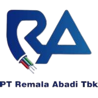
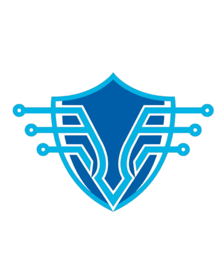

Halo, saya
Muhammad
Dhiyauddin.
Fresh Graduate TJKT yang memiliki pengalaman pada Mikrotik, Linux Server, Proxmox, Arduino, ESP32, UI/UX Figma, dan implementasi jaringan komputer.
7+
Projects2
Certificates2
Internships1
FreelanceSedikit tentang saya
Saya adalah Network Engineer yang berpengalaman dalam merancang dan mengelola infrastruktur jaringan.
Keahlian saya mencakup konfigurasi Mikrotik & server Linux, virtualisasi dengan Proxmox, dan pemrograman mikrokontroler.
Di luar pekerjaan, saya aktif mengikuti perkembangan teknologi jaringan dan sertifikasi industri.
↓ Lihat CV| Laravel | Framework PHP untuk web development | ✓ AI-assisted |
| Arduino IDE | Pemrograman mikrokontroler (C++) | ✓ AI-assisted |
| ESP32 | IoT & embedded system | ✓ AI-assisted |
| PHP 8.2 | Backend web development | ✓ AI-assisted |
✓ AI-assisted = Dikembangkan dengan bantuan ChatGPT / GitHub Copilot
Proyek pilihan
Mobil mini cerdas dengan sensor ultrasonik HC-SR04 untuk menghindari rintangan secara otomatis, dilengkapi fitur penyedot debu berbasis dinamo kipas.
Sistem manajemen kos-kosan berbasis web dengan 3 role (Admin, Penghuni, Publik). Fitur: tagihan otomatis, verifikasi pembayaran, QR code, rating & review, email notification, dan export PDF.
Desain antarmuka aplikasi Sistem Informasi Jurusan berbasis mobile untuk SMK Wisata Indonesia. Dibuat menggunakan Figma.
Sistem pemesanan restoran digital via QR Code. Pelanggan scan QR di meja, pesan mandiri via HP. Dashboard admin dengan grafik penjualan, export Excel hasil penjualan, pemantauan pesanan secara real-time
Membangun server dan jaringan virtual menggunakan Proxmox VE, Mikrotik, Ubuntu, dan hosting web menggunakan aaPanel.
Sistem keamanan pintu pintar berbasis ESP32 dengan modul RFID RC522 dan solenoid door lock sebagai mekanisme pengunci.
Hadiah interaktif berbasis ESP32 dengan layar TFT 2.8", buzzer, dan tombol. Menampilkan slideshow foto & pesan, memutar lagu ulang tahun otomatis.
Pengalaman kerja

PT Remala Abadi TbkMendukung operasional NOC dengan melakukan pengecekan status pelanggan via OLT, memeriksa indikasi gangguan jaringan (LOS), validasi data pelanggan berdasarkan Client ID, serta monitoring melalui Zimbra dan Tachyon.net. Mencatat, melaporkan gangguan, dan mengelola data operasional menggunakan spreadsheet.

PT Solusi Intek IndonesiaMengumpulkan tautan (link) sumber data dari dark web, merapikannya ke dalam spreadsheet (Excel), lalu melakukan proses import data ke dalam database menggunakan perintah terminal (CLI). Setelah data terdaftar, saya menjalankan script Python untuk melakukan crawling dan mengambil data keseluruhan dari link tersebut.
Terlibat dalam proyek instalasi CCTV di lingkungan sekolah. Melakukan penarikan kabel, pemasangan kamera pada titik yang ditentukan, pemasangan konektor, serta pengecekan koneksi fisik hingga perangkat siap digunakan.
Sertifikasi & Lisensi
Mari berkolaborasi.
Saya terbuka untuk peluang kerja, freelance, atau sekadar diskusi. Hubungi saya lewat email atau media sosial.
dhiyauddintjkt@gmail.com ↗